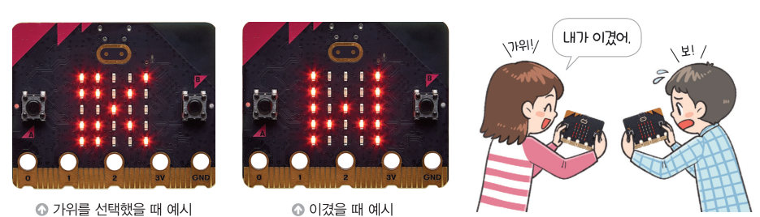
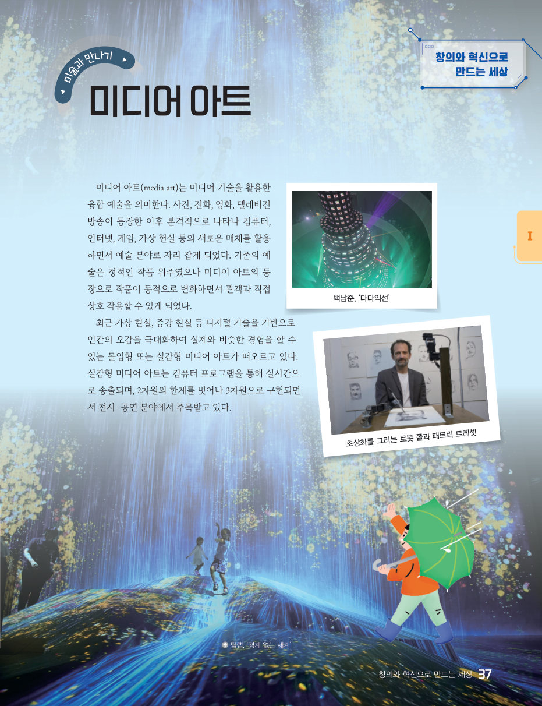
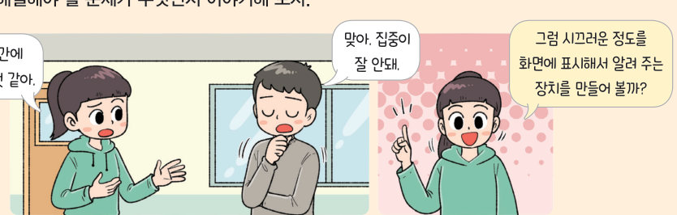

살아있는 교과서 · Ⅰ. 컴퓨팅 시스템 · 2. 피지컬 컴퓨팅 프로그래밍 · 04 32~41쪽
이심전심 게임 장치 만들기
짜장과 짬뽕, 친구와 같은 것을 고를 수 있을까? 두 대의 가상 마이크로비트를 라디오 통신으로 연결해 이심전심 게임, 가위바위보, 찬반 투표를 해 보고, 소음 측정 알림이를 설계하며 Ⅰ단원을 마무리하자.
🎯 학습 목표 — 문제 해결에 적합한 센서를 선택하고 동작을 제어하는 프로그램을 작성하여, 선택한 정보를 전송하는 무선 통신 장치로 간단한 게임을 제작할 수 있다.
문제 상황 · 문제의 이해와 분석이심전심 게임 장치 만들기 32~33쪽
32쪽“우리 짜장과 짬뽕으로 이심전심 게임 한번 해 볼까?” “짜장!” “짬뽕!” “이 놀이를 게임 장치로 만들어서 해 볼까?”
이심전심 게임처럼 두 가지 중 하나를 선택한 후 같은 것을 선택했는지 판단해 주는 장치를 만들어 보자. 각자 하나씩의 장치로 선택한 정보를 전송하고 결과를 확인하는 무선 통신 장치를 만들어 보자.
32쪽무선 통신 방식 중 라디오 통신을 이용하여 같은 그룹(0~255)으로 설정한 여러 마이크로비트로 동시에 신호를 전달한다. 신호는 숫자, 문자, 숫자와 문자 쌍 중의 하나를 전송한다.
무선 통신 방식의 종류 전자기파를 이용한 통신 방법으로 와이파이(Wi-Fi), 블루투스, 라디오 통신 등이 있다. · 라디오 통신과 그룹 하나의 기기에서 동일한 그룹의 모든 기기에 신호를 전달하므로, 게임에 참여할 두 명만 같은 번호의 그룹으로 설정해야 한다.
1알고리즘 설계하기 작은 문제와 알고리즘을 연결해 보자.
초기화
버튼 선택 및 송신
수신
결과 확인
프로그래밍하기 · 평가하기두 대의 가상 마이크로비트로 이심전심 게임을 해 보자 33~34쪽
선택 결과 0 · 수신 결과 0
선택 결과 0 · 수신 결과 0
A = 짜장(1), B = 짬뽕(2)
1평가하기 두 장치로 직접 해 보고 답해 보자.
두 장치의 라디오 그룹이 다르면 결과가 나타나는가?
한 명만 버튼을 눌렀을 때 결과가 나타나는가?
두 명이 같은 버튼을 누르면 하트가 나타나는가?
2두 사람의 선택이 완료되었는지 확인할 때 ‘수신 결과 × 선택 결과 > 0’ 조건을 쓰는 까닭은 아직 선택하지 않은 변수의 값이 이라서 곱이 0이 되기 때문이다.
해 보기 · 모둠무선 통신을 활용한 장치 만들기 35쪽

35쪽가위를 선택했을 때 예시 · 이겼을 때 예시
1 가위바위보 게임 — ① 친구와 같은 라디오 그룹을 설정한다. ② A 버튼(가위, 전송 1), B 버튼(바위, 전송 2), A+B 버튼(보, 전송 3)을 선택한다. ③ 전송된 숫자와 비교하여 승, 무, 패를 출력한다.
두 장치에서 각각 A(가위), B(바위), A+B(보)를 눌러 보세요.
1‘나’의 장치에서 볼 때 결과는? (1 가위, 2 바위, 3 보)
나 1(가위) · 상대 3(보)
나 2(바위) · 상대 3(보)
나 3(보) · 상대 3(보)
나 2(바위) · 상대 1(가위)
2 찬반(○, ×) 투표 — (1) 송신기: A 버튼은 라디오 수 1 전송 → ○ 출력, B 버튼은 라디오 수 2 전송 → × 출력. (2) 수신기: A 버튼을 누르면 ‘○: 찬성 수 ×: 반대 수’ 출력(예 ○: 16 ×: 14), A와 B를 동시에 누르면 찬성 수, 반대 수 초기화.
송신기(왼쪽)에서 A·B를 여러 번 눌러 투표하고, 수신기(오른쪽)에서 A를 눌러 결과를 보세요.
2송신기에서 A를 4 번, B를 3 번 누른 뒤 수신기의 A 버튼을 누르면 ‘○: ×: ’가 출력된다. 수신기에서 두 값을 세려면 변수가 개 필요하다.
창의와 혁신으로 만드는 세상 · 미술과 만나기미디어 아트 37쪽
미디어 아트(media art)는 미디어 기술을 활용한 융합 예술을 의미한다. 사진, 전화, 영화, 텔레비전 방송이 등장한 이후 본격적으로 나타나 컴퓨터, 인터넷, 게임, 가상 현실 등의 새로운 매체를 활용하면서 예술 분야로 자리 잡게 되었다. 기존의 예술은 정적인 작품 위주였으나 미디어 아트의 등장으로 작품이 동적으로 변화하면서 관객과 직접 상호 작용할 수 있게 되었다. 최근 가상 현실, 증강 현실 등 디지털 기술을 기반으로 인간의 오감을 극대화하여 실제와 비슷한 경험을 할 수 있는 몰입형 또는 실감형 미디어 아트가 떠오르고 있다.

37쪽백남준 ‘다다익선’, 초상화를 그리는 로봇 폴과 패트릭 트레셋, 팀랩 ‘경계 없는 세계’
1센서를 활용해 관객과 상호 작용하는 미디어 아트 작품을 구상해 보자(사용할 센서와 관객의 행동에 따라 작품이 어떻게 변하는지).
과정 중심의 수행 활동소음 측정 알림이 만들기 38~39쪽

38쪽“우리 반 진로 시간에 너무 소란스러운 것 같아.” “맞아, 집중이 잘 안돼.” “그럼 시끄러운 정도를 화면에 표시해서 알려 주는 장치를 만들어 볼까?”
1문제 정의 ( ) 위한 피지컬 컴퓨팅 시스템을 구현해 보자. 사용할 센서는 , 액추에이터는 이다.
시제품 시험내 소음 측정 알림이 설정하기
소리 크기를 움직여 보세요.
2작은 문제와 알고리즘 해결해야 할 문제를 작은 문제로 나누고, 각 작은 문제의 알고리즘을 적어 보자.
3공유 및 개선하기 친구들의 의견을 듣고 개선할 부분을 적어 보자.
확인 꼭꼭 · 단원 평가하기이심전심 게임 장치와 대단원 마무리 41쪽
08서술형 위 프로그램은 흔들면 무작위로 가위, 바위, 보 중 하나를 출력하려고 만들었다. 가끔 아무것도 출력되지 않는 오류가 생기는데 그 원인을 찾고, 해결 방법을 적어 보자.
09라디오 통신에서 같은 교실의 여러 모둠이 동시에 이심전심 게임을 할 때 신호가 섞이지 않게 하려면 모둠마다 .
핵심 콕콕 정리하기Ⅰ. 컴퓨팅 시스템 마무리 36쪽
1라디오 통신
마이크로비트의 라디오 통신은 ~ 중 같은 그룹으로 설정한 기기에 숫자, 문자, 숫자와 문자 쌍을 전송한다.
평가 기준
스스로 평가
컴퓨팅 사고력 문제 해결에 필요한 피지컬 컴퓨팅 구성 요소를 선택할 수 있는가?
컴퓨팅 사고력 피지컬 컴퓨팅 구성 요소와 알고리즘으로 문제 해결 프로그램을 작성할 수 있는가?
디지털 문화 소양 친구들과 역할을 나누어 피지컬 컴퓨팅 장치를 설계하여 만들 수 있는가?
디지털 문화 소양 창의적인 아이디어로 피지컬 컴퓨팅 장치를 만들 수 있는가?
제출학생 정보 · 제출하기
모든 활동을 마친 뒤 제출하면 전체가 한 번에 채점되고 피드백이 나타나요. 학년을 꼭 적어 주세요 — 답안은 선생님 스프레드시트(내 학년 시트의 정보 탭)에 기록돼요.